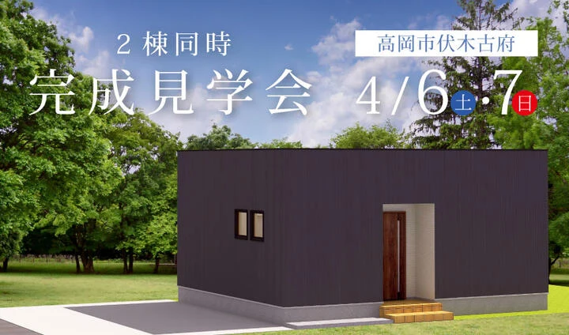
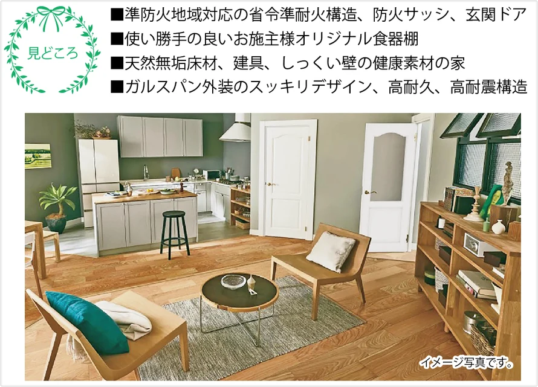
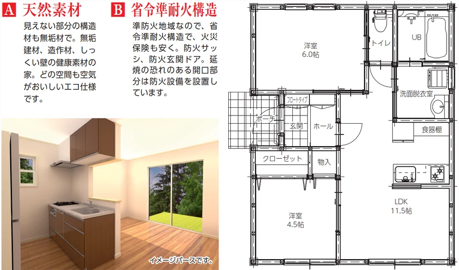
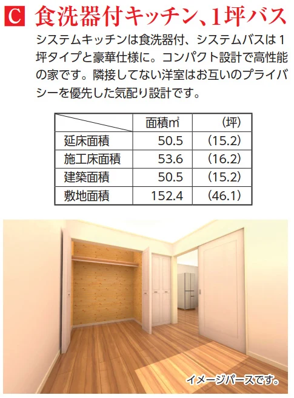
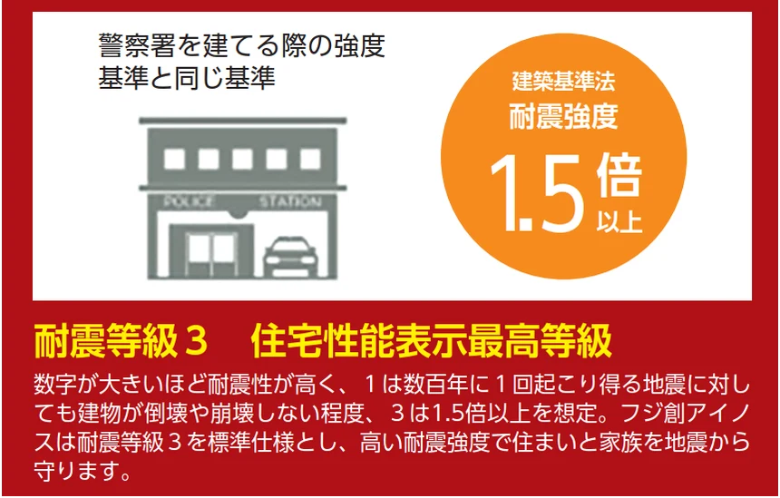
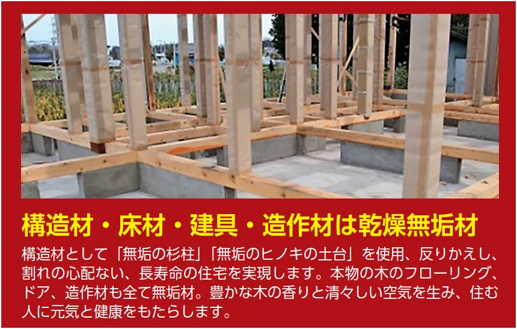
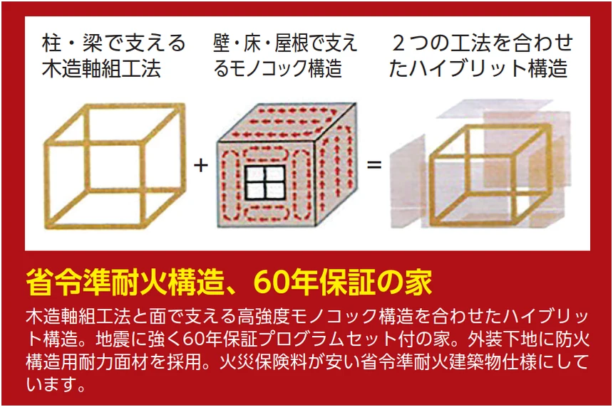
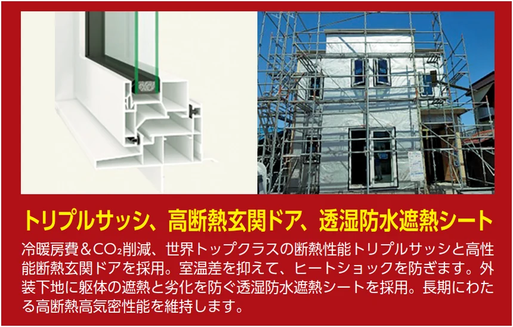
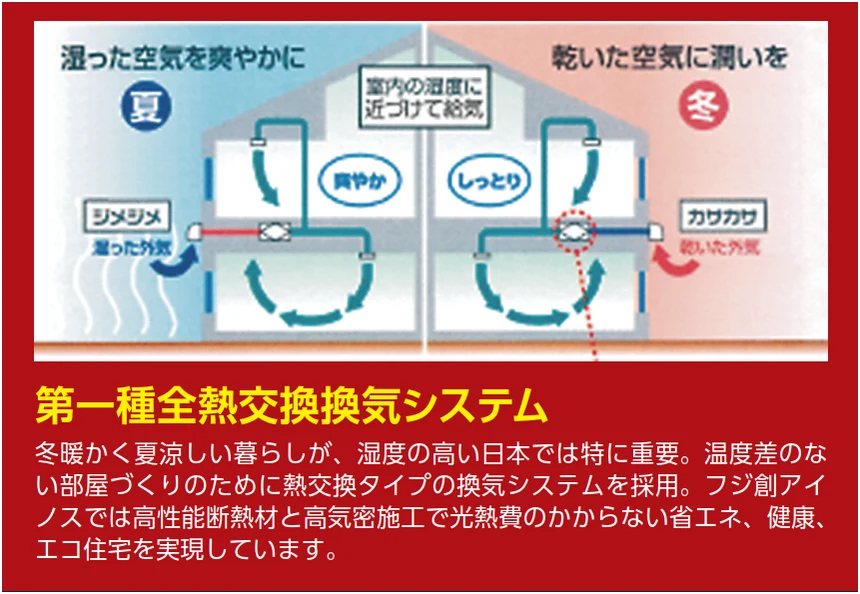
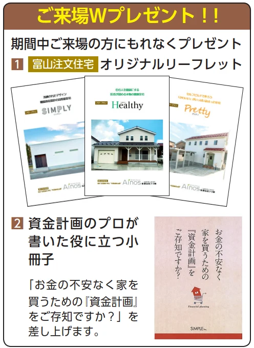

イベント情報
（終了しました）【高岡市伏木古府】2棟同時完成見学会
詳しいご案内
日程・価格・募集内容などは、掲載当時の情報です。
4月6日(土)･7日(日)の2日間
「中川栄町」見学会と同時開催！！

事前予約制・2日間限定開催

ほのかな気配が伝わる気配りの家


〇Ainosの「富山注文住宅」は魅力的で価値の高い設備が標準仕様






◯「自然素材の家」が「幸せな住宅」の理由
住む人が「幸せ」であるためには、「健康」であることが大前提。
多くの家が、"新建材 " と呼ばれる化学物質を含有した建材を使って建てられていますが、眼の刺激、のどの刺激、頭痛、疲労感など、多様な症状を訴える「シックハウス症候群」は、この化学物質が原因とされるデータが数多く報告されています。
安心して健康的な生活をしていただくために、漆喰や無垢材などの「自然素材」にこだわった家づくりをしています。

開催概要
- 開催日時
- 2024年4月6日（土）7日（日）
- 住所
- 富山県高岡市伏木古府 ※詳しい場所はご予約の方にお伝えします
- 電話
- 0800-200-2661(フリーダイヤル)
ご予約フォームから「ご希望の日時」をお聞かせください。